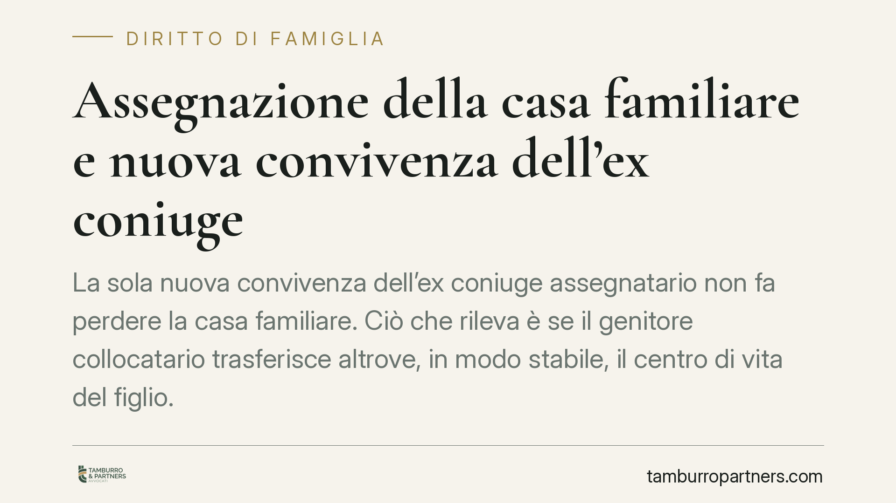

Assegnazione della casa familiare e nuova convivenza dell'ex coniuge
La sola nuova convivenza dell'ex coniuge assegnatario non fa perdere la casa familiare. Ciò che rileva è se il genitore collocatario trasferisce altrove, in modo stabile, il centro di vita del figlio. Un tema che tocca insieme diritto di abitazione, mantenimento e interessi del proprietario dell'immobile, e che va valutato caso per caso.

Il punto della questione
L'assegnazione della casa familiare è la decisione con cui il giudice attribuisce a uno dei genitori il diritto di continuare ad abitare l'immobile che era la residenza della famiglia, di norma perché con lui convivono i figli. È una misura pensata nell'interesse dei figli, non del genitore.
Da qui la domanda ricorrente: se l'ex coniuge assegnatario inizia una nuova convivenza, perde automaticamente il diritto sulla casa? La risposta consolidata è no. Occorre distinguere due situazioni diverse: la semplice nascita di un nuovo rapporto affettivo e l'effettivo spostamento della vita del minore altrove.
Inquadramento normativo
La disciplina è contenuta nell'art. 337-sexies del codice civile, che regola l'assegnazione del godimento della casa familiare tenendo prioritariamente conto dell'interesse dei figli. La norma prevede, nella sua lettera, che il diritto al godimento venga meno quando l'assegnatario non abiti o cessi di abitare stabilmente nell'immobile, oppure conviva more uxorio o contragga nuovo matrimonio.
Questa previsione, però, non opera in modo automatico. La sua versione originaria era collocata nell'art. 155-quater c.c., introdotto dalla riforma dell'affidamento del 2006. Su quella norma è intervenuta la Corte costituzionale con la sentenza n. 308 del 2008, che ha dichiarato l'illegittimità dell'automatismo: la decadenza non può scattare per il solo fatto della nuova convivenza o del nuovo matrimonio, ma deve sempre passare attraverso una valutazione del giudice che verifichi la coerenza della decisione con l'interesse dei figli. Con la successiva riorganizzazione delle norme in materia, la disciplina è confluita nell'attuale art. 337-sexies c.c., ma il principio fissato dalla Consulta resta il criterio interpretativo di riferimento.
Cosa cambia davvero: il centro di vita del figlio
Il criterio decisivo non è la relazione sentimentale in sé, ma dove si trova stabilmente la vita del minore. Se il genitore collocatario continua ad abitare la casa familiare con il figlio, anche accogliendovi il nuovo partner, la funzione dell'assegnazione permane: il minore vive nel proprio ambiente domestico.
Diverso è il caso in cui il genitore si trasferisca in via stabile presso il nuovo convivente, portando con sé il figlio e abbandonando di fatto l'immobile. In questa ipotesi la casa familiare non svolge più la funzione che ne giustificava l'assegnazione, e viene meno il presupposto stesso del diritto di abitazione. Ciò che conta è l'abbandono effettivo e stabile dell'immobile, non la formale titolarità di una nuova relazione.
Le ricadute economiche e patrimoniali
La questione non è isolata. La perdita dell'assegnazione può incidere su altri equilibri.
Sul mantenimento: il valore economico del godimento della casa viene di norma considerato nella determinazione dell'assegno. La revoca dell'assegnazione può quindi riflettersi sulla misura del contributo dovuto o percepito.
Sulla comproprietà: se l'immobile è in comproprietà tra gli ex coniugi, il venir meno del vincolo di assegnazione libera il bene e apre alla possibilità di divisione o di vendita. Per il proprietario esclusivo o per il comproprietario non assegnatario, la fine dell'assegnazione significa recuperare la piena disponibilità della propria quota.
Cosa fare in concreto
- Documenta la situazione abitativa reale. Se contesti o difendi un'assegnazione, raccogli elementi concreti sulla residenza effettiva del figlio: iscrizione scolastica, utenze, testimonianze, spostamenti stabili.
- Non dare per scontato l'automatismo. La nuova convivenza dell'ex coniuge, da sola, non fa decadere il diritto. Serve una domanda al giudice e una valutazione dell'interesse del minore.
- Valuta insieme casa e mantenimento. Prima di agire per la revoca, considera l'impatto sull'assegno: i due profili vanno esaminati congiuntamente.
- Se sei comproprietario, verifica le opzioni sull'immobile. Cessata l'assegnazione, considera la divisione o la vendita della quota.
- Chiedi una valutazione preventiva. Ogni caso dipende da fatti specifici; consigliamo un esame della singola situazione prima di avviare un giudizio.
La regola di fondo resta netta: l'assegnazione tutela i figli, non premia né penalizza le scelte affettive dei genitori. La decadenza è possibile, ma richiede la prova che la casa familiare abbia perso la sua funzione.
Ogni famiglia ha il suo equilibrio.
Separazione, divorzio, affidamento, assegno: se vuoi un confronto riservato su una specifica situazione, scrivi allo studio. Ti rispondiamo entro un giorno lavorativo.